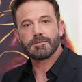

Ben Afflek

Бе́нджамін «Бен» Ґі́за А́ффлек-Болдт
(англ. Benjamin «Ben» Geza Affleck-Boldt[4]; нар. 15 серпня 1972, Берклі, Каліфорнія, США) —
американський актор, сценарист та кінорежисер. Лауреат премії «Оскар» за сценарій до фільму «Розумник Вілл Гантінґ» (разом з Меттом Деймоном),
найкращий фільм 2012 року «Арго», а також антипремії «Золота малина» як найгірший актор за ролі у фільмах «Джилі», «Шибайголова» і «Час
розплати»
Кар'єра
Виконав роль Бетмена (Брюса Вейна) у кінокоміксі «Бетмен проти Супермена: На зорі справедливості», який вийшов у прокат в березні 2016
року.[7] Обрання Бена на роль зустріло обурення частини фанатів DC Comics. Але після прем'єри більшість визнало, що Аффлек переконливо перевтілився у супергероя.[8] Актор також зіграв Бетмена у «Лізі Справедливості» (2017) розширеного всесвіту DC.
Robert Pattinson
Роберт Дуґлас Томас Паттінсон
(англ. Robert Douglas Thomas Pattinson, нар. 13 травня 1986, — англійський актор, модель та музикант. Він найбільше відомий ролями: Едварда Каллена, вампіра, у кіноадаптації світового бестселера «Сутінки», написаного Стефані Меєр; Седрика Дігорі у фільмі «Гаррі Поттер і кубок вогню»; Ніла у фільмі Крістофера Нолана «Тенет», та Бетмена у однойменній екранізації Метта
Бетмен
«Бетмен» (англ. The Batman) — супергеройський фільм 2022 року, знятий режисером Меттом Рівзом за мотивами коміксів DC
Роберт Паттінсон вперше зіграв роль Брюса Вейна / Бетмена. На разі у планах трилогія фільмів про Бетмена[4].
Прем’єра «Бетмена» відбулася в Лінкольн-центрі міста Нью-Йорк 1 березня 2022 року, а у світовий прокат стрічка вийшла 4 березня. Подія двічі переносилася з початкової дати випуску в червні 2021 року через пандемію COVID-19. Прем'єра в Україні мала відбутися 3 березня 2022 року, проте через російське вторгнення в Україну вона відбулася 12 травня 2022 року.
Фільм зібрав понад 764 мільйони доларів при бюджеті 185–200 мільйонів доларів, що робить його найкасовішим фільмом 2022 року, він отримав похвалу за гру акторів, музику, операторську роботу, режисуру Рівза, екшн-сцени та історію, хоча деякі критикували його хронометраж.